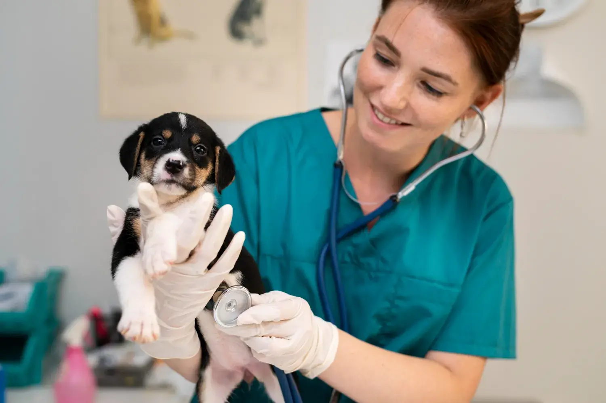

Bienvenidos a nuestra Clínica Veterinaria
-

Conoce nuestro equipo!
Profesionales altamente calificados para el cuidado de tu mascota con más de 30 años de experiencia en el sector.
Ver más -

Conoce nuestros servicios!
Ofrecemos medicina preventiva, vacunación, chequeos geriátricos y más con tecnología de última generación.
Ver servicios -
Agenda tu cita con nosotros!
Estamos disponibles para atender a tu mascota con cita previa en nuestro moderno centro veterinario.
Contactar ahora

Sobre Nosotros
Contamos con casos de éxito desde 1991, respaldados por la confianza de miles de mascotas.
Proporcionar atención veterinaria integral y de calidad excepcional, promoviendo la salud, bienestar y felicidad de los animales. Nos comprometemos con tecnología innovadora y un equipo empático.
Nuestros Servicios
La Clínica Veterinaria del Bosque ofrece programas de medicina preventiva, incluyendo vacunación para perros, gatos y hurones con biológicos de alta calidad y cadena de frío garantizada. También realizan chequeos geriátricos para detección temprana de enfermedades en mascotas mayores, promoviendo una vida más larga y saludable.
Lo que dicen nuestros clientes
Excelente atención, mi perro recibió el mejor cuidado posible. Los veterinarios fueron muy profesionales y cariñosos con mi mascota.
Esta clínica es excelente. El personal es muy amable y el ambiente es muy acogedor. Mi mascota siempre recibe una atención de primera y se siente muy tranquila aquí.

Los veterinarios fueron muy amables y se aseguraron de que se sintiera tranquila durante la revisión. ¡Se nota que aman a los gatos y saben cómo tratarlos!"